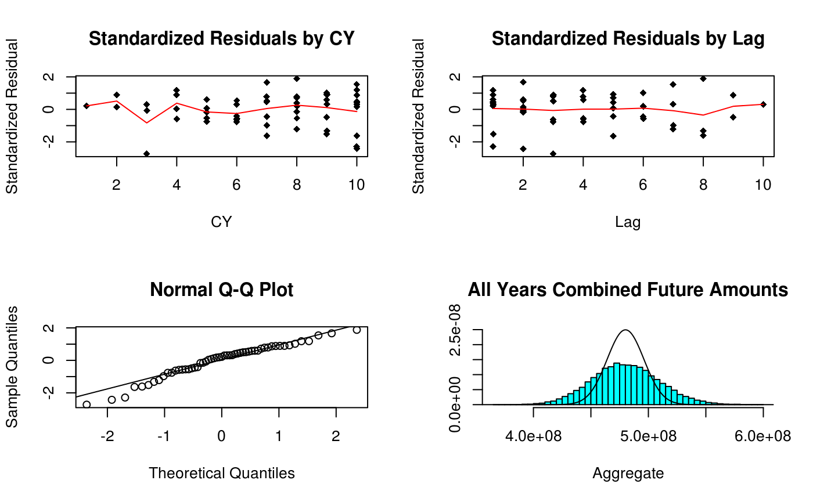

stochastic_reserving.RmdInput (B0) is a development array of cumulative averages with a the exposures (claims) used in the denominator appended as the last column. Assumption is for the same development increments as exposure increments and that all development lags with no development have # been removed. Data elements that are not available are indicated as such. This should work (but not tested for) just about any subset of an upper triangular data matrix.
Another requirement of this code is that the matrix contain no columns that are all zero.
B0 <- matrix(c(670.25868,1480.24821,1938.53579,2466.25469,2837.84888,3003.52391,
3055.38674,3132.93838,3141.18638,3159.72524,
767.98833,1592.50266,2463.79447,3019.71976,3374.72689,3553.61387,3602.27898,
3627.28386,3645.5656,NA,
740.57952,1615.79681,2345.85028,2910.52511,3201.5226,3417.71335,3506.58672,
3529.00243,NA,NA,
862.11956,1754.90405,2534.77727,3270.85361,3739.88962,4003.00219,4125.30694,
NA,NA,NA,
840.94172,1859.02531,2804.54535,3445.34665,3950.47098,4185.95298,NA,NA,NA,NA,
848.00496,2052.922,3076.13789,3861.03111,4351.57694,NA,NA,NA,NA,NA,
901.77403,1927.88718,3003.58919,3881.41744,NA,NA,NA,NA,NA,NA,
935.19866,2103.97736,3181.75054,NA,NA,NA,NA,NA,NA,NA,
759.32467,1584.91057,NA,NA,NA,NA,NA,NA,NA,NA,
723.30282,NA,NA,NA,NA,NA,NA,NA,NA,NA),10,10,byrow = TRUE)
# the exposures (claims) used in the denominator
dnom <- c(39161.,38672.4628,41801.048,42263.2794,41480.8768,40214.3872,43598.5056,
42118.324,43479.4248,49492.4106)
size <- nrow(B0)
# Identify model to be used
# Berquist for the Berquist-Sherman Incremental Severity
# CapeCod for the Cape Cod
# Hoerl for the Generalized Hoerl Curve Model with trend
# Wright for the Generalized Hoerl Curve with individual accident year levels
# Chain for the Chain Ladder model
model <- "Berquist"
#model <- "CapeCod"
#model <- "Hoerl"
#model <- "Wright"
#model <- "Chain"
# Toggle graphs off if desired
graphs <- TRUE
# Toggle simulations off if desired
simulation <- TRUE# Calculate incremental average matrix
A0 <- cbind(B0[, 1], (B0[, (2:size)] + 0 * B0[, (1:(size - 1))]) -
(B0[, (1:(size - 1))] + 0 * B0[, (2:size)]))
# Generate a matrix to reflect exposure count in the variance structure
logd <- log(matrix(dnom, size, size))
# Set up matrix of rows and columns, makes later calculations simpler
rowNum <- row(A0)
colNum <- col(A0)
#. upper_triangle_mask is a mask matrix of allowable data, upper triangular assuming same
#' development increments as exposure increments
#' msn is a mask matrix that picks off the first forecast diagonal
#' msd is a mask matrix that picks off the to date diagonal
upper_triangle_mask <- (size - rowNum) >= colNum - 1
msn <- (size - rowNum) == colNum - 2
msd <- (size - rowNum) == colNum - 1
# Amount paid to date
paid_to_date <- rowSums(B0 * msd, na.rm = TRUE) if (model == "Berquist") {
model_lst <- berquist(B0, paid_to_date, upper_triangle_mask)
} else if (model == "CapeCod") {
model_lst <- capecod(B0, paid_to_date, upper_triangle_mask)
} else if (model == "Hoerl") {
model_lst <- hoerl(B0, paid_to_date, upper_triangle_mask)
} else if (model == "Wright") {
model_lst <- wright(B0, paid_to_date, upper_triangle_mask)
} else if (model == "Chain") {
model_lst <- chain(B0, paid_to_date, upper_triangle_mask)
}
g_obj <- model_lst$g_obj
g_grad <- model_lst$g_grad
g_hess <- model_lst$g_hess
a0 <- model_lst$a0Note that the general form of the model has parameters in addition to those in the loss model, namely the power for the variance and the constant of proprtionality that varies by column. So if the original model has k parameters with size columns of data, the total objective function has k + size + 1 parameters
l.obj <- function(a, A) {
npar <- length(a) - 2
e <- g_obj(a[1:npar])
v <- exp(-outer(logd[, 1], rep(a[npar + 1], size), "-")) * (e^2)^a[npar + 2]
t1 <- log(2 * pi * v) / 2
t2 <- (A - e) ^ 2 / (2 * v)
sum(t1 + t2, na.rm = TRUE)
}
# Gradient of the objective function
l.grad <- function(a, A) {
npar <- length(a) - 2
p <- a[npar + 2]
Av <- aperm(array(A, c(size, size, npar)), c(3, 1, 2))
e <- g_obj(a[1:npar])
ev <- aperm(array(e, c(size, size, npar)), c(3, 1, 2))
v <- exp(-outer(logd[, 1], rep(a[npar + 1], size), "-")) * (e^2)^p
vv <- aperm(array(v, c(size, size, npar)), c(3, 1, 2))
dt <- rowSums(g_grad(a[1:npar]) * ((p / ev) + (ev - Av) / vv - p *
(Av - ev)^2 / (vv * ev)),
na.rm = TRUE,
dims = 1)
yy <- 1 - (A - e) ^ 2 / v
dk <- sum(yy / 2, na.rm = TRUE)
dp <- sum(yy * log(e ^ 2) / 2, na.rm = TRUE)
c(dt, dk, dp)
}l.hess <- function(a, A) {
npar <- length(a) - 2
p <- a[npar + 2]
Av <- aperm(array(A, c(size, size, npar)), c(3, 1, 2))
Am <- aperm(array(A, c(size, size, npar, npar)), c(3, 4, 1, 2))
e <- g_obj(a[1:npar])
ev <- aperm(array(e, c(size, size, npar)), c(3, 1, 2))
em <- aperm(array(e, c(size, size, npar, npar)), c(3, 4, 1, 2))
v <- exp(-outer(logd[, 1], rep(a[npar + 1], size), "-")) * (e ^ 2) ^ p
vv <- aperm(array(v, c(size, size, npar)), c(3, 1, 2))
vm <- aperm(array(v, c(size, size, npar, npar)), c(3, 4, 1, 2))
g1 <- g_grad(a[1:npar])
gg <- aperm(array(g1, c(npar, size, size, npar)), c(4, 1, 2, 3))
gg <- gg * aperm(gg, c(2, 1, 3, 4))
gh <- g_hess(a[1:npar])
dtt <- rowSums(
gh * (p / em + (em - Am) / vm - p * (Am - em) ^ 2 / (vm * em)) +
gg * (
1 / vm + 4 * p * (Am - em) / (vm * em) + p * (2 * p + 1) * (Am - em) ^ 2 /
(vm * em ^ 2) - p / em ^ 2
),
dims = 2,
na.rm = TRUE
)
dkt <- rowSums((g1 * (Av - ev) + p * g1 * (Av - ev) ^ 2 / ev) / vv, na.rm = TRUE)
dtp <- rowSums(g1 * (1 / ev + (
log(ev ^ 2) * (Av - ev) + (p * log(ev ^ 2) - 1) * (Av - ev) ^ 2 / ev
) / vv),
na.rm = TRUE)
dkk <- sum((A - e) ^ 2 / (2 * v), na.rm = TRUE)
dpk <- sum(log(e ^ 2) * (A - e) ^ 2 / (2 * v), na.rm = TRUE)
dpp <- sum(log(e ^ 2) ^ 2 * (A - e) ^ 2 / (2 * v), na.rm = TRUE)
m1 <- rbind(array(dkt), c(dtp))
rbind(cbind(dtt, t(m1)), cbind(m1, rbind(cbind(dkk, c(
dpk
)), c(dpk, dpp))))
}End of funciton specificaitons now on to the minimization
For starting values use fitted objective function and assume variance for a cell is estimated by the square of the difference between actual and expected averages. Note since log(0) is -Inf we need to go through some machinations to prep the y values for the fit
E <- g_obj(a0)
yyy <- (A0 - E)^2
yyy <- logd + log(((yyy != 0) * yyy) - (yyy == 0))
sss <- na.omit(data.frame(x = c(log(E^2)), y = c(yyy)))
ttt <- array(coef(lm(sss$y ~ sss$x)))[1:2]
a0 <- c(a0, ttt)
set.seed(1) # to check reproducibility with original code
max <- list(iter.max = 10000, eval.max = 10000)npar <- length(a0) - 2
p <- mle$par[npar + 2]
mean <- g_obj(mle$par[1:npar])
var <- exp(-outer(logd[, 1], rep(mle$par[npar + 1], size), "-")) * (mean ^
2) ^ p
stres <- (A0 - mean) / sqrt(var)
g1 <- g_grad(mle$par[1:npar])
gg <- aperm(array(g1, c(npar, size, size, npar)), c(4, 1, 2, 3))
gg <- gg * aperm(gg, c(2, 1, 3, 4))
meanv <- aperm(array(mean, c(size, size, npar)), c(3, 1, 2))
meanm <- aperm(array(mean, c(size, size, npar, npar)), c(3, 4, 1, 2))
varm <- aperm(array(var, c(size, size, npar, npar)), c(3, 4, 1, 2))Initialize simulation array to keep simulation results
Simulation for distribution of future amounts
Want 10,000 simulations, but exceeds R capacity, so do in batches of 5,000
nsim <- 5000
smsk <- aperm(array(c(upper_triangle_mask), c(size, size, nsim)), c(3, 1, 2))
smsn <- aperm(array(c(msn), c(size, size, nsim)), c(3, 1, 2))
if (simulation) {
for (i in 1:5) {
# Randomly generate parameters from multivariate normal
spar <- rmvnorm(nsim, mle$par, vcov)
# Arrays to calculate simulated means
esim <- g_obj(spar)
# Arrays to calculate simulated variances
ksim <- exp(aperm(outer(array(
spar[, c(npar + 1)], c(nsim, size)
), log(dnom), "-"), c(1, 3, 2)))
psim <- array(spar[, npar + 2], c(nsim, size, size))
vsim <- ksim * (esim ^ 2) ^ psim
# Randomly simulate future averages
temp <- array(rnorm(nsim * size * size, c(esim), sqrt(c(vsim))), c(nsim, size, size))
# Combine to total by exposure period and in aggregate
# notice separate array with name ending in "n" to capture
# forecast for next accounting period
sdnm <- t(matrix(dnom, size, nsim))
fore <- sdnm * rowSums(temp * !smsk, dims = 2)
forn <- sdnm * rowSums(temp * smsn, dims = 2)
# Cumulate and return for another 5,000
sim <- rbind(sim, cbind(fore, rowSums(fore)))
smn <- rbind(smn, cbind(forn, rowSums(forn)))
spm <- rbind(spm, spar)
}
}## [1] "Berquist"## [1] "Berquist-Sherman Incremental Severity"## V1 V2 V3 V4
## Min. :0 Min. :-1452523 Min. :-1460032 Min. :-1416929
## 1st Qu.:0 1st Qu.: 302558 1st Qu.: 811550 1st Qu.: 2807320
## Median :0 Median : 597817 Median : 1228080 Median : 3544006
## Mean :0 Mean : 642440 Mean : 1252318 Mean : 3558347
## 3rd Qu.:0 3rd Qu.: 932306 3rd Qu.: 1673686 3rd Qu.: 4290686
## Max. :0 Max. : 3508046 Max. : 4460241 Max. : 8808302
## V5 V6 V7
## Min. : -6553 Min. : 5560629 Min. :20506185
## 1st Qu.: 6227569 1st Qu.:15141382 1st Qu.:37021474
## Median : 7336299 Median :17015966 Median :40212065
## Mean : 7343317 Mean :17027739 Mean :40274082
## 3rd Qu.: 8459679 3rd Qu.:18881648 3rd Qu.:43484551
## Max. :15788019 Max. :29283048 Max. :63449354
## V8 V9 V10
## Min. : 42237266 Min. : 84207233 Min. :155320285
## 1st Qu.: 69227330 1st Qu.:119093974 1st Qu.:198804197
## Median : 74008098 Median :126196817 Median :209482103
## Mean : 74154814 Mean :126342190 Mean :209675354
## 3rd Qu.: 78916652 3rd Qu.:133428500 3rd Qu.:220366856
## Max. :110991079 Max. :173619116 Max. :279848807
## V11
## Min. :366516154
## 1st Qu.:460324346
## Median :479599631
## Mean :480270601
## 3rd Qu.:499535658
## Max. :598174718## V1 V2 V3 V4
## Min. :0 Min. :-1452523 Min. :-1138446 Min. :-1476281
## 1st Qu.:0 1st Qu.: 302558 1st Qu.: 272247 1st Qu.: 1626501
## Median :0 Median : 597817 Median : 505270 Median : 2200960
## Mean :0 Mean : 642440 Mean : 527492 Mean : 2230028
## 3rd Qu.:0 3rd Qu.: 932306 3rd Qu.: 758791 3rd Qu.: 2800206
## Max. :0 Max. : 3508046 Max. : 2627158 Max. : 6670925
## V5 V6 V7
## Min. :-1172470 Min. : 1270164 Min. : 5239797
## 1st Qu.: 2880155 1st Qu.: 8086341 1st Qu.:18510808
## Median : 3663228 Median : 9515524 Median :20882468
## Mean : 3691096 Mean : 9561369 Mean :20957144
## 3rd Qu.: 4467433 3rd Qu.:11003597 3rd Qu.:23334596
## Max. : 9452336 Max. :19788052 Max. :38041131
## V8 V9 V10
## Min. :11507452 Min. :23972497 Min. : 23306626
## 1st Qu.:30127968 1st Qu.:42126743 1st Qu.: 54269334
## Median :33338663 Median :46211701 Median : 59039646
## Mean :33428879 Mean :46263910 Mean : 59065905
## 3rd Qu.:36694937 3rd Qu.:50318506 3rd Qu.: 63803067
## Max. :56230971 Max. :74988812 Max. :103912858
## V11
## Min. :118324354
## 1st Qu.:167789490
## Median :176256113
## Mean :176368264
## 3rd Qu.:184790407
## Max. :231225457if (graphs) {
#x11(title <- model_description(model))
# Prep data for lines for averages in scatter plots of standardized residuals
ttt <- array(cbind(c(rowNum + colNum - 1), c(stres)),
c(length(c(stres)), 2, 19))
sss <- t(array((1:19), c(19, length(c(stres)))))
# Plotting
par(mfrow = c(2, 2))
plot(
na.omit(cbind(c(rowNum + colNum - 1), c(stres))),
main = "Standardized Residuals by CY",
xlab = "CY",
ylab = "Standardized Residual",
pch = 18
)
lines(na.omit(list(
x = (1:19),
y = colSums(ttt[, 2, ] *
(ttt[, 1, ] == sss), na.rm = TRUE) /
colSums((ttt[, 1, ] == sss) +
0 *
ttt[, 2, ], na.rm = TRUE)
)), col = "red")
plot(
na.omit(cbind(c(colNum), c(stres))),
main = "Standardized Residuals by Lag",
xlab = "Lag",
ylab = "Standardized Residual",
pch = 18
)
lines(na.omit(list(
x = colNum[1, ],
y = colSums(stres, na.rm = TRUE) /
colSums(1 + 0 * stres, na.rm = TRUE)
)), col = "red")
qqnorm(c(stres))
qqline(c(stres))
if (simulation) {
proc <- list(x = (density(sim[, 11]))$x,
y = dnorm((density(sim[, 11]))$x,
sum(matrix(c(
dnom
), size, size) * mean * !upper_triangle_mask),
sqrt(sum(
matrix(c(dnom), size, size) ^ 2 * var * !upper_triangle_mask
))))
MASS::truehist(sim[, 11],
ymax = max(proc$y),
main = "All Years Combined Future Amounts",
xlab = "Aggregate")
lines(proc)
}
} ## Summary From Simulation
Summary of mean, standard deviation, and 90% confidence interval from simulation, similar for one-period forecast
sumr <- matrix(0, 0, 4)
sumn <- matrix(0, 0, 4)
for (i in 1:11) {
sumr <- rbind(sumr, c(mean(sim[, i]), sd(sim[, i]), quantile(sim[, i], c(.05, .95))))
sumn <- rbind(sumn, c(mean(smn[, i]), sd(smn[, i]), quantile(smn[, i], c(.05, .95))))
}
sumr## 5% 95%
## [1,] 0.0 0.0 0.00 0
## [2,] 642440.5 481028.8 -44194.36 1501201
## [3,] 1252318.1 648086.8 234536.28 2350542
## [4,] 3558346.6 1140237.1 1736139.47 5459264
## [5,] 7343316.8 1685230.7 4618772.27 10135134
## [6,] 17027739.1 2812746.4 12455686.23 21698143
## [7,] 40274081.9 4840499.9 32377990.92 48358166
## [8,] 74154813.9 7300843.4 62309918.99 86306505
## [9,] 126342190.5 10639635.7 109032027.02 144116409
## [10,] 209675353.5 15905776.4 183850667.27 236026995
## [11,] 480270600.9 29296749.7 432905077.06 529557186## 5% 95%
## [1,] 0.0 0.0 0.00 0
## [2,] 642440.5 481028.8 -44194.36 1501201
## [3,] 527492.0 376363.7 -37645.58 1173939
## [4,] 2230028.1 900647.6 790310.82 3758650
## [5,] 3691095.9 1201650.8 1761276.09 5701639
## [6,] 9561369.2 2183081.0 6055215.06 13228795
## [7,] 20957144.4 3610684.4 15092490.22 26953460
## [8,] 33428879.0 4931632.4 25433851.64 41583251
## [9,] 46263909.9 6136563.8 36357479.01 56377102
## [10,] 59065904.7 7160890.5 47441520.52 70937231
## [11,] 176368263.7 12708050.9 155788022.10 197482374